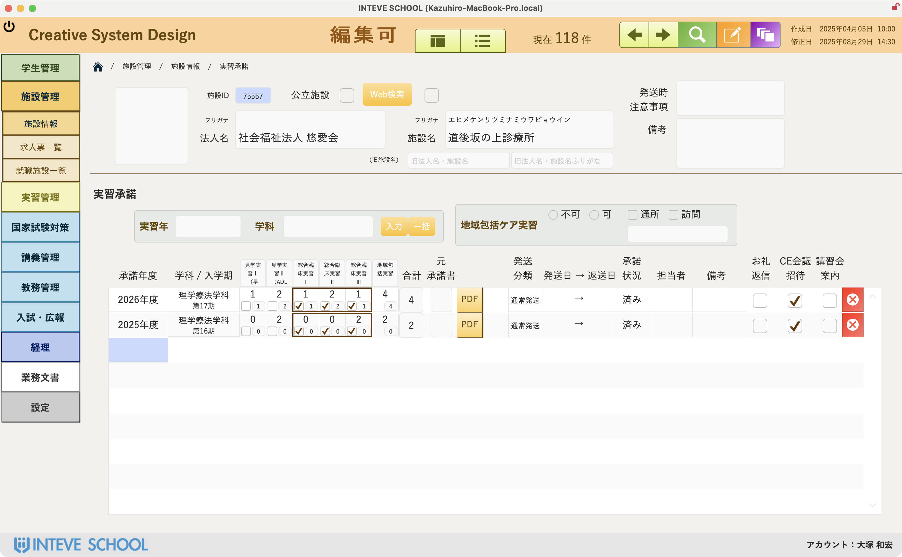
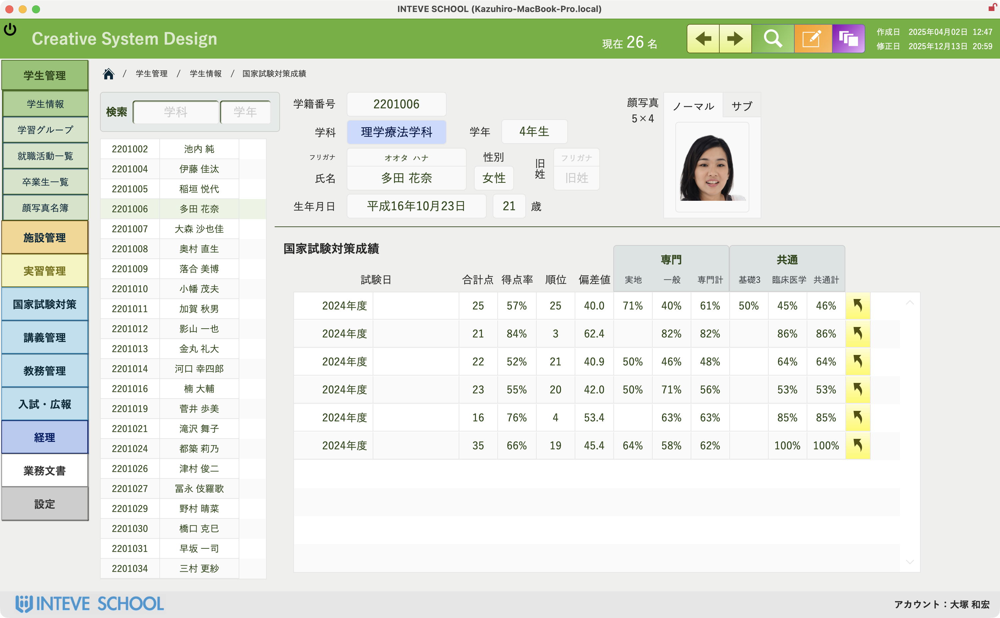
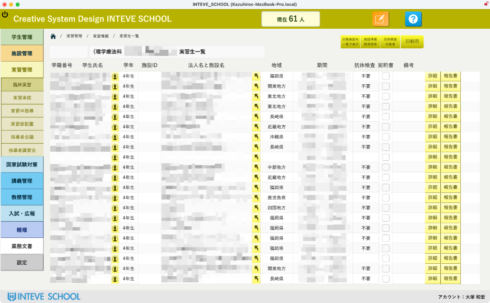
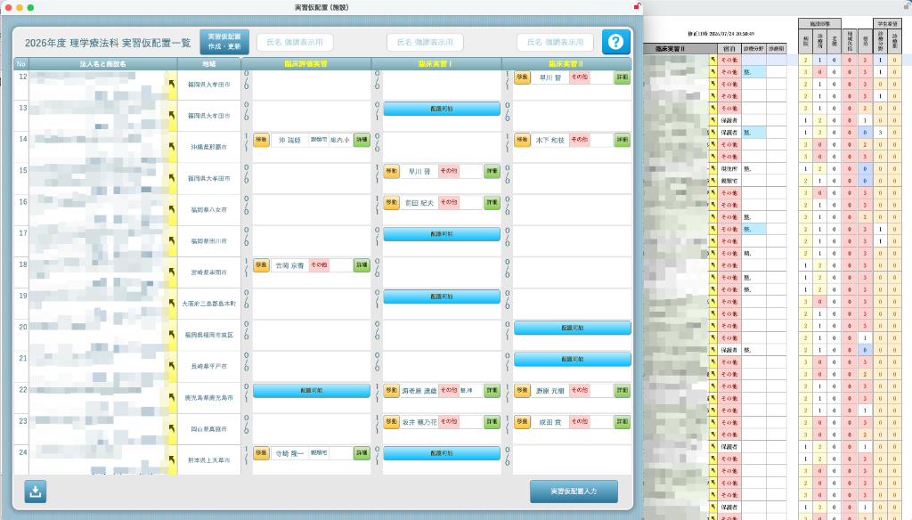
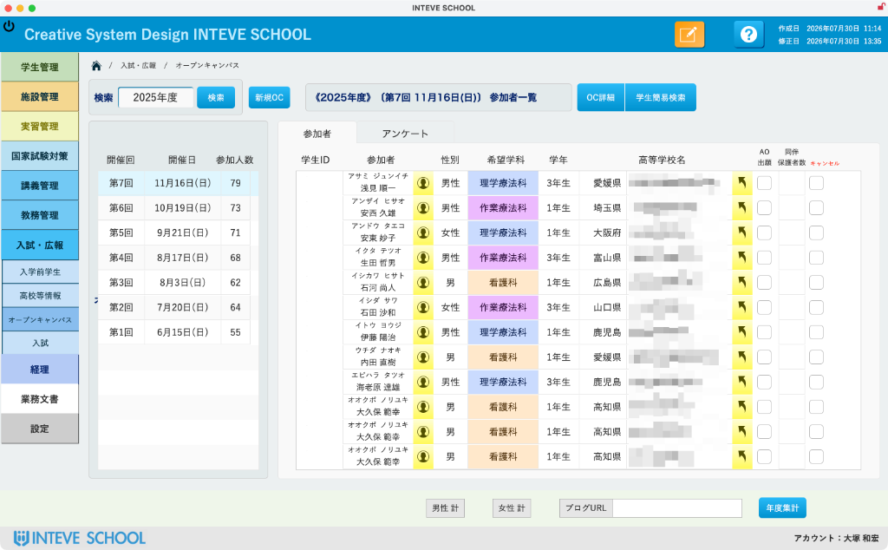
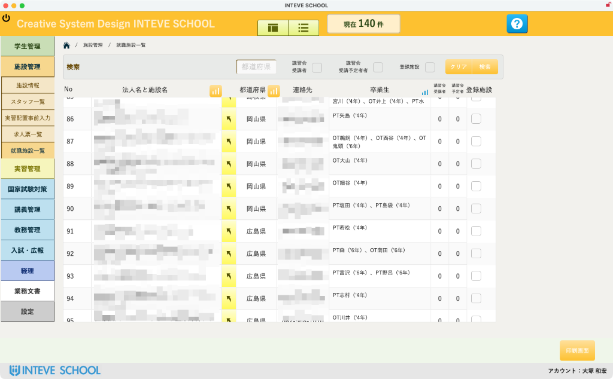
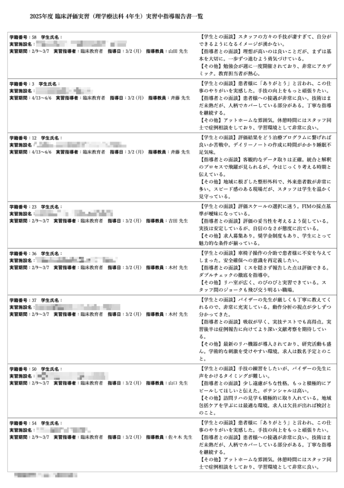
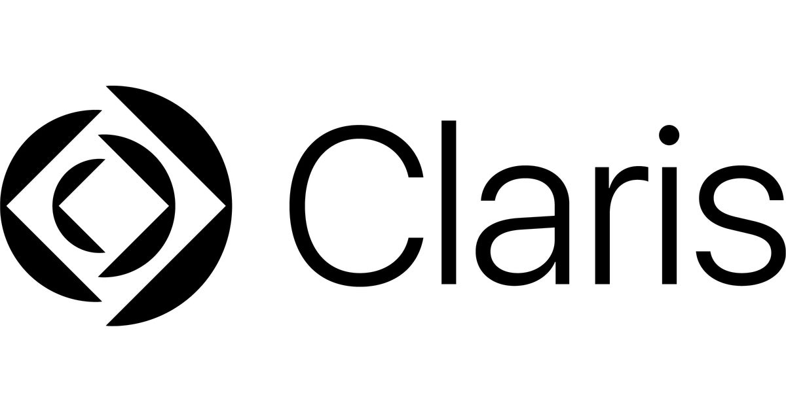

医療系教員が20年以上使い創り続けた医療系教員のためのシステム《INTEVE SCHOOL®》
創造的な"こと"に 自分と時間を活かすための仕組みづくり
教員が本来行うべき"人材育成"に専念するために取り組む業務効率化のご提案です。


学生一人ひとりの成長を
もっと丁寧にサポートしたい
多様な教育データに基づき、個々の強みと課題を可視化。最適なフィードバックで人材育成の質を向上させます。
とにかく業務が煩雑で
時間がかかり、余裕がない
事務作業の自動化と一元化を実現。教員が本来向き合うべき「教育」と「研究」に充てる時間を創出します。
様々なデータの中から、
必要な情報を素早く探し出したい
直感的なインターフェースで膨大なデータに即座にアクセス。意思決定のスピードと精度を劇的に向上させます。
「実習生・指導者・教員」を
リアルタイムで繋ぐ。
『INTEVE LINK』
従来の紙媒体や個別連絡を完全デジタル化。毎日の体調管理・出席時間算定・日誌・自校仕様チェックリスト・成果物提出・三者チャットをワンストップで共有。教員22年の現場知に基づいた最新ソリューションです。


時間とコストを最適化する、
他では真似できない価値を。
導入効果を実感してください。《INTEVE SCHOOL》は、FileMakerの持つポテンシャルを解放し、煩雑な業務から解放します。時間とコストの制約から教育現場を解き放ち、創造的な活動に注力できる環境を実現します。
もう苦手とは言わせない。
本システムが学生の弱点を『見える化』します。
国家試験過去問や模試データ、蓄積された知識を一元管理。単なる得点集計にとどまらず、多角的な分析エンジンで学生一人ひとりに個別最適化された指導環境を提供します。
-
多角的な成績の可視化：識別指数・注意係数・推奨選択肢の正否を分析し、表面上の正解率では見えない真の理解度を明確化。
-
学習プロセスの評価：クラス内での「勉強の進め方・アプローチの善し悪し」を客観的にグラフ化。
-
具体的な学習指導をフィードバック：どの問題・苦手分野で「どのような勉強法が必要か」まで具体的に個別アドバイス。


もうExcel管理には戻れない。
本システムが実現する臨床実習のスマートオペレーション。
受入承諾、配置検討、指導者管理から移動・宿泊手配まで。複雑を極める臨床実習の全工程をシステム化し、教員の作業負担を劇的に削減します。
-
配置案（叩き台）の自動作成：学生の希望分野や自宅・通勤元住所を照合し、最適な実習配置案の叩き台を瞬時に自動生成。
-
全学生の公平な配置バランス検討：施設種別（病院・診療所・老健等）、ホテル利用回数、希望に添った回数の偏りをクラス全体で可視化・調整。
-
ボタン操作で超かんたん入れ替え：配置の変更や学生の入れ替えはワンクリック操作。Excelの転記ミスや関数破壊のストレスをゼロに。
-
通勤ルート・詳細案内を取得：学生の自宅・移動拠点から実習施設までの最適な通勤ルートや移動案内を即座に確認。
-
施設周辺ホテルの一括検索：遠方実習などで宿泊が必要な場合、実習施設周辺のホテル情報をまとめてスムーズに一括検索。


入学前から就職まで、学生の成長をデータで一元管理。
学生ライフサイクル全体を可視化。
オープンキャンパスから就職先まで追跡。検索も分析もスムーズに行えるストレスフリーな管理体制。マーケティング部門と連携し学校へのエンゲージメントを高めます。


学校監査・実習訪問の書類作成、
まだExcelで手作業ですか？
日々のデータ入力から、監査提出用『実習中指導報告書一覧』をワンクリック出力。

監査対応を劇的に変える3つの強み
学生・指導者コメントの一括自動集計
面談履歴や各現場からの指導コメントをデータベースから即座に抽出・集計します。
日付・担当教員名の自動紐付け
学籍番号、実習施設、指導日、担当教員名がミスのない形で完全連動します。
監査提出フォーマットそのまま出力
厚生労働省・文部科学省の学校監査提出要項に準拠したレイアウトでそのまま印刷・提出可能。
導入効果の比較
監査前・訪問後の書類整理にかかる膨大な時間を解放します
複数教員のメモを集計・Excel転記
- 複数教員の訪問メモや手書きコメントを集計・整理する作業が煩雑
- Excel転記時の転記ミス・フォントズレの修正追われストレス蓄積
- 集計・Excel転記に年間数十時間の作業が発生
現場入力から一発出力
- 日々の現場・面談入力データがそのまま自動蓄積・自動一括集計
- ワンクリックで提出用『実習中指導報告書一覧』が完全出力
- 準備時間を大幅削減！指導・教育の本業に集中
※ 現在ご利用中のExcelフォーマットに合わせたカスタム帳票出力のご相談も承っております。
データで繋ぐ、教員間の連携。
個別最適化学習の第一歩。
少子化が進む今、学生一人ひとりへの丁寧な指導が求められています。経験則だけに頼らず、日々の多様なデータを教員間で共有・活用すること。それが、「個別最適化学習」を実現する鍵です。
教育の「属人化」を防ぐ
経験や勘に頼る指導から脱却し、客観的データに基づいた指導で教育の質を平準化します。
「宝の持ち腐れ」データ
点在する貴重な学生情報。連係・共有しなければ、それは「宝の持ち腐れ」状態です。
学生の全体像を把握する
多角的なデータで学生の全体像を把握。教員間の連携で、個別最適な指導を実現します。
「集める」から「活かす」
まずはデータを集めることから。蓄積されたデータが、未来の教育改善の資産となります。

なぜClaris FileMaker®なの？
FileMaker、Claris、およびファイルメーカーのロゴは、米国およびその他の国における Claris International Inc. の登録商標です。
迷わない、悩まない。
直感的なアイコンと配置
直感的に理解できるインターフェースで、ITスキルに関わらず、全てのユーザーがストレスなく業務に必要な操作できます。
OSの垣根を超える。
どこでも最高のパフォーマンス
Mac、Windows、iPhone、iPadなど、お使いのデバイスで一貫した操作性と機能を利用でき、場所を選ばずに業務を継続できます。
変わる状況をすぐに把握。
リアルタイムコラボレーション
FileMakerを使用することで、常に現場で更新されたばかりの最も新しいデータに即座にアクセスし、業務に活かすことができます。
「あったらいいな」を早期に。
FileMakerのスピード開発
豊富なテンプレートや部品を活用することで開発時間を大幅短縮。FileMakerの基本的な使い方から具体的な開発方法までレクチャーします。
『INTEVE SCHOOL』の導入形態
ご紹介のFileMakerカスタムアプリは、貴機関のニーズに合わせて柔軟な導入が可能です。
一つの場所で、じっくりと。
あなたのペースで始める。
一台のコンピューターで、全機能をご利用いただけます。小規模な環境や、個人業務の効率化から始めたい場合に最適です。
学内をつなぎ連携をスムーズに。
チームで活用する。
学内LAN環境を利用し、複数人で共有。教員間の情報共有や進捗管理など、セキュアな学内ネットワークで一元管理を実現します。
いつでも、どこからでも。
場所を選ばない。
インターネット環境があれば、内外問わず様々なデバイスからアクセス可能。リモート指導や複数キャンパス間の共有に最適です。
いつものデバイスが、
学びのプラットフォームに。
Windows、Mac、iPhone、iPad。INTEVE SCHOOLは、お手持ちの様々なデバイスで快適にご利用いただけます。場所や時間を選ばずにアクセスできるため、先生方は職員室でも研究室でも移動中でも、必要な情報にすぐにアクセスし、スムーズなデータ操作を進めることができます。